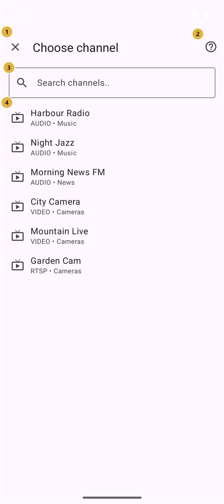
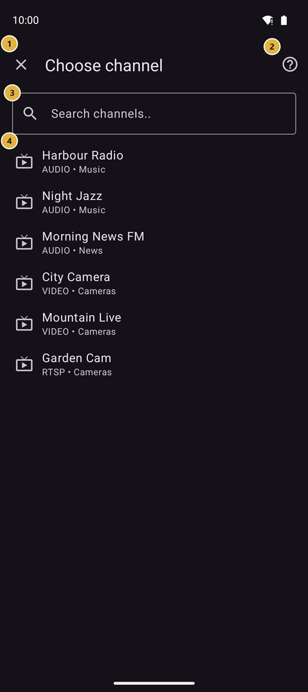

Choose channel
What this is for
Pick the channel that a channel tile on your home screen opens. This screen appears when you add the tile.


In this order
- Find the channel: scroll the list 4 or type part of its name in the search field 3.
- Tap the channel. The tile is created at once and this screen closes.
- Leave with Close 1 if you changed your mind; no tile is added.
The elements
1CloseLeaves without adding the tile.
Nothing is added to the home screen.
- Undo
- Add the tile again from the widget list of your home screen.
2HelpOpens this page.
Back returns to the list.
- Shortcut
- F1
3Search channels..Narrows the list as you type.
Matches the channel name. If nothing matches, the screen says that no channels were found.
4Channel listYour channels.
Tapping a row chooses that channel for the tile. The tile then opens it with one tap on the home screen.
- Undo
- Remove the tile and add it again to choose another channel.